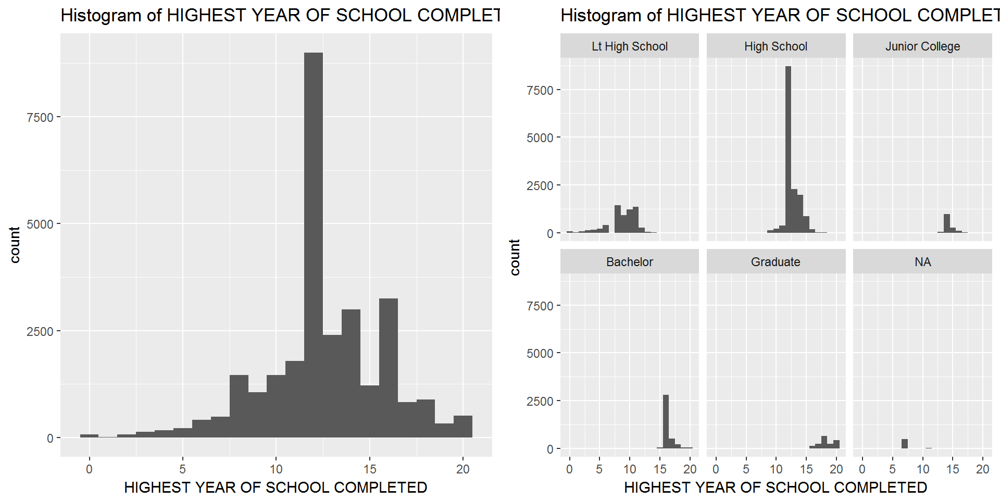
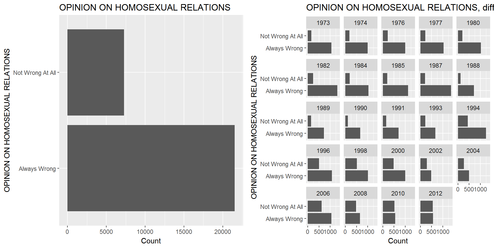
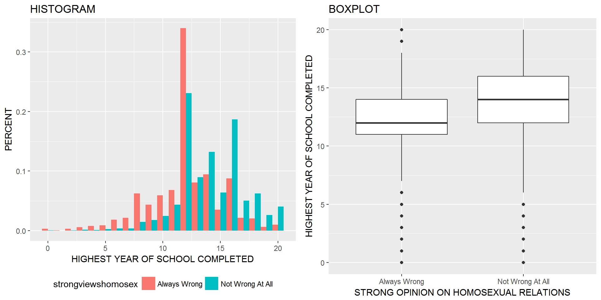
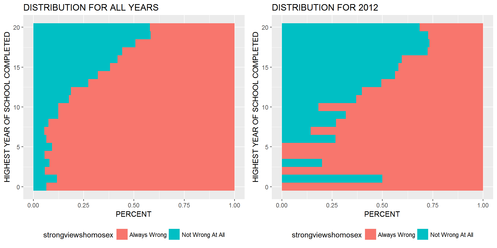
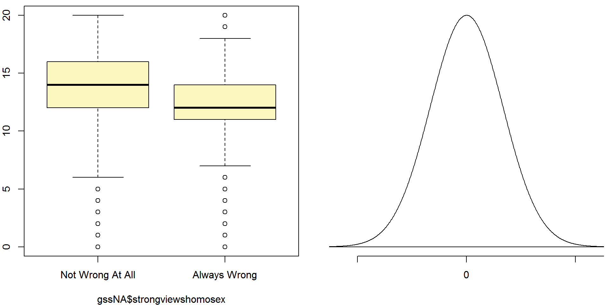

Introduction
This document summarizes my project I did for the Coursera Master Statistics with R class. I decided to explore the following question: “Is there a relationship between strong opinions on same sex relationships and years of education?”.
The world changes. And as it changes people and states become more liberal – even when it comes to topics of same sex relationships. A strong belief that same sex relationships are wrong may root in religion or family values. However, as the Economist explains (http://www.economist.com/node/17227800?story_id=17227800), in 1995 fewer than half of Americans (48%) are opposed to gay marriage, while 42% are in favour. Today same sex marriage is legal in more than 30 states in the U.S. (http://www.ncsl.org/research/human-services/same-sex-marriage-laws.aspx). In regard of this development I find it worthwhile to understand not only the legal adoption of same-sex relationships, but also how the public adopts to the liberation of same sex relationships. While there exist data analyses on opinion on same sex relationships with respect to religion (http://www.economist.com/node/17227800?story_id=17227800) no analysis with respect to years of education exists to the best of my knowledge.
In the remainder of this chapter I introduce the data set and necessary variables which will be analyzed in order to find an answer to the aforementioned question. Further, I will detail necessary data manipulation steps. In chapter two you find some explorative data analyses and sample statistics to understand data spread and variability. In chapter three I elaborate on analyses that explore a possible relationship between HIGHEST YEAR OF SCHOOL COMPLETED and VIEW ON HOMOSEXUAL RELATIONS. I conclude my project in chapter four.
If you want to follow up on this project or simply look at the code, please feel free to use the code button on the top-right corner of this document.
Setup
# load libraries
library("ggplot2")
library("ggthemes")
library("RColorBrewer")
library("grid")
# load inference code
source("http://bit.ly/dasi_inference")
# load gss data
load(url("http://bit.ly/dasi_gss_data"))Data
For my analysis I rely on the data set General Social Survey (GSS) (source: http://d396qusza40orc.cloudfront.net/statistics/project/gss.Rdata). The GSS is a sociological survey used to collect data on demographic characteristics and attitudes of residents of the United States.
The survey is conducted face-to-face with an in-person interview by the National Opinion Research Center at the University of Chicago, of adults (18+) in randomly selected households. The survey was conducted every year from 1972 to 1994 (except in 1979, 1981, and 1992). Since 1994, it has been conducted every other year. (source: http://en.wikipedia.org/wiki/General_Social_Survey)
It is an observational study (survey), where respondents are observed and not exposed to a treatment. The respondents are selected randomly. Scope of inference: This data cannot be used for establishing causal links, since there is no random assignment. Scope of interest: The population of interest are residents of the USA. Generalizability is possible, since the respondents were selected randomly. One possible source of bias could be that randomly selected respondents choose not to respond (non-response) so that the sample is not generalizable anymore. The data set contains 57,061 cases (observations). Each case describes a respondent’s interview result, including 114 statements (variables).
The two variables of interest are VIEW ON HOMOSEXUAL RELATIONS (categorical) and HIGHEST YEAR OF SCHOOL COMPLETED (numerical).
Data cleansing
In order to work with the data, I remove all observations that state a NA for the variable VIEW ON HOMOSEXUAL RELATIONS. My assumption is that the distribution of the variable is the same as for the people who have not preferred to answer (24,272 observations). I removed observations with missing values for HIGHEST YEAR OF SCHOOL COMPLETED in the same manner (75 observations).
# delete all NAs for homosex var
gssNA <- gss[rowSums(is.na(gss[95]))==0,]
# delete all NAs for education var
gssNA <- gssNA[rowSums(is.na(gssNA[8]))==0,]Since I am only interested in the strong opinions on homosexual relations I concentrate on respondents who voted either Always Wrong or Not Wrong At All and I ignore respondents with a not strong opinion, e.g., Sometimes Wrong, Almst Always Wrg or Other.
# Select only the responses of interest
gssNA$strongviewshomosex <- as.character(gssNA$homosex)
gssNA <- gssNA[gssNA$strongviewshomosex != "Sometimes Wrong",]
gssNA <- gssNA[gssNA$strongviewshomosex != "Almst Always Wrg",]
gssNA <- gssNA[gssNA$strongviewshomosex != "Other",]
gssNA$strongviewshomosex <- as.factor(gssNA$strongviewshomosex)Exploratory data analysis
Before we look into a possible relationship between the two variables I explore each of the variables independently. Since one variable is numerical (HIGHEST YEAR OF SCHOOL COMPLETED) and one is categorical (OPINION ON HOMOSEXUAL RELATIONS) I use different approaches.
HIGHEST YEAR OF SCHOOL COMPLETED
This section explores the numerical variable HIGHEST YEAR OF SCHOOL COMPLETED (gssNA$educ). The summary for the variable shows a mean of 12.6 years and a median of 12 years. The histogram shows a multimodal distribution. The different degrees very likely explain the peaks (multimodality) in the histogram. The second figure shows histograms differentiated by the variable DEGREE. We also know from the summary of the variable that 25% of all respondents – which answered the same sex relationship question – have less or equal than 11 years of education; and 75% have less or equal than 14 years of education. The maximum lies by 20 years of education.
12 years of education falls into the US high school degree, and hence, I argue that this degree is the most common for US residents. The maximum is 20 years of education, reserved for graduate students.
summary(gssNA$educ)## Min. 1st Qu. Median Mean 3rd Qu. Max.
## 0.00 11.00 12.00 12.56 14.00 20.00sd(gssNA$educ)## [1] 3.178399The histogram shows a multimodal distribution that is clearly centered at 12 years of education. The multimodality is explained by the respondents different degrees (another GSS variable).
# Create histogram
educhist <- ggplot(gssNA, aes(x = educ)) + geom_histogram(binwidth = 1) + labs(title = "Histogram of HIGHEST YEAR OF SCHOOL COMPLETED", x = "HIGHEST YEAR OF SCHOOL COMPLETED")
# Create degree histogram
educdegreehist <- ggplot(gssNA, aes(x = educ)) + geom_histogram(binwidth = 1) + facet_wrap(~degree) + labs(title = "Histogram of HIGHEST YEAR OF SCHOOL COMPLETED, separated by degree", x = "HIGHEST YEAR OF SCHOOL COMPLETED")
# Print both histograms
multiplot(educhist, educdegreehist, cols=2)
Strong OPINION ON HOMOSEXUAL RELATIONS
In this section I explore the categorical variable OPINION ON HOMOSEXUAL RELATIONS with the remaining levels Always Wrong and Not Wrong At All that I refer to as strong opinions. The summary for the variable shows that the majority of the respondents answered that homosexual relations are Always Wrong with 21.542 cases and the minority sees it as Not Wrong At All with 7.271 cases. When we differentiate this by year we see a shift in the distribution of the answers. In 1973 the majority answered with Always Wrong. This changes over time. In 2010 and 2012 the respondents almost equally answered with either Always Wrong or Not Wrong At All.
#by(gssNA$strongviewshomosex, gssNA$year, summary)
summary(gssNA$strongviewshomosex)## Always Wrong Not Wrong At All
## 21542 7271sd(gssNA$strongviewshomosex)## [1] 0.4343693# Create overall barplot
barplotall <- ggplot(gssNA, aes(x = strongviewshomosex)) + geom_bar() + labs(title = "OPINION ON HOMOSEXUAL RELATIONS", y = "Count", x = "OPINION ON HOMOSEXUAL RELATIONS") + coord_flip()
# Create barplot, separated by years
barplotyears <- ggplot(gssNA, aes(x = strongviewshomosex)) + geom_bar() + facet_wrap(~year) + labs(title = "OPINION ON HOMOSEXUAL RELATIONS, differentiated by year", y = "Count", x = "OPINION ON HOMOSEXUAL RELATIONS") + coord_flip()
# Print both histograms
multiplot(barplotall, barplotyears, cols=2)
Inference
After discussing the two variables independently, I use this section to explore the possible relationship between the variables HIGHEST YEAR OF SCHOOL COMPLETED and OPINION ON HOMOSEXUAL RELATIONS (strong opinions).
By comparing the means (and medians) for each level of OPINION ON HOMOSEXUAL RELATIONS I can see that respondents who view homosexual relationships as Always Wrong have on average 12.04 years of education, while respondents who view homosexual relationships as Not Wrong At All have on average 14.12 years of education. The means are also close to their respective medians that indicates not a too skewed distribution
# Determine means and medians for each level
by(gssNA$educ, gssNA$strongviewshomosex, summary)## gssNA$strongviewshomosex: Always Wrong
## Min. 1st Qu. Median Mean 3rd Qu. Max.
## 0.00 11.00 12.00 12.04 14.00 20.00
## --------------------------------------------------------
## gssNA$strongviewshomosex: Not Wrong At All
## Min. 1st Qu. Median Mean 3rd Qu. Max.
## 0.00 12.00 14.00 14.12 16.00 20.00# Create histogram for YEARS OF EDUCATION, separated by views on homosexual relations
plothist <- ggplot(gssNA, aes(x = educ, fill = strongviewshomosex)) + geom_histogram(aes(y=(..density..)), position='dodge', binwidth=1) + labs(title = "HISTOGRAM", x = "HIGHEST YEAR OF SCHOOL COMPLETED", y= "PERCENT") + theme(legend.position="bottom")
# Create boxplot for YEARS OF EDUCATION, separated by views on homosexual relations
plotbox <- ggplot(gssNA, aes(y = educ, x=strongviewshomosex)) + geom_boxplot() + labs(title="BOXPLOT", y = "HIGHEST YEAR OF SCHOOL COMPLETED", x = "STRONG OPINION ON HOMOSEXUAL RELATIONS")
# Create bargraph for YEARS OF EDUCATION, separated by views on homosexual relations
plotallyears <- ggplot(gssNA, aes(x = educ, fill = strongviewshomosex)) + geom_bar(position="fill", binwidth = 1) + coord_flip() + labs(title="DISTRIBUTION FOR ALL YEARS", x = "HIGHEST YEAR OF SCHOOL COMPLETED", y = "PERCENT") + theme(legend.position="bottom")
# Create bargraph for YEARS OF EDUCATION, separated by views on homosexual relations and only for year 2012
plot2012 <- ggplot(gssNA[gssNA$year == 2012,], aes(x = educ, fill = strongviewshomosex)) + geom_bar(position="fill", binwidth = 1) + coord_flip() + labs(title="DISTRIBUTION FOR 2012", x = "HIGHEST YEAR OF SCHOOL COMPLETED", y = "PERCENT") + theme(legend.position="bottom")
# Print plots
multiplot(plothist, plotbox, cols=2)
multiplot(plotallyears, plot2012, cols=2)
In the following I describe the necessary steps for inference. The project question I want to investigate is :“Is there a relationship between strong opinions on same sex relationships and years of education?”.
Set the hypotheses
H0: On average, US citizen that find homosexual relationships Not Wrong At All have the same years of education than US citizen that find homosexual relationships Always Wrong.
HA: On average, US citizen that find homosexual relationships Not Wrong At All have more years of education than US citizen that find homosexual relationships Always Wrong.
Calculate the point estimate and standard error
Firstly, I calculate the standard error. To do this, I need the standard error for each level of categorical variable for the education variable. If the conditions are met, I draw the sampling distribution, shade the p-value, and calculate the test statistic. On the basis of the test statistic I make a decision and interpret it in context of the project question.
#Determine standard error
by(gssNA$educ, gssNA$strongviewshomosex, sd)## gssNA$strongviewshomosex: Always Wrong
## [1] 3.096514
## --------------------------------------------------------
## gssNA$strongviewshomosex: Not Wrong At All
## [1] 2.895745Calculating the standard error for comparing two means follows this formula:
\[SE = \sqrt{\frac{s_{1}^{2}}{n_{1}}+\frac{s_{2}^{2}}{n_{2}}}\] \[SE = \sqrt{\frac{2.8957^{2}}{7271}+\frac{3.0965^{2}}{21542}} = SE = \sqrt{\frac{8.38507849}{7271}+\frac{9.58831225}{21542}}\] \[SE = \sqrt{0.00115322218264337780222802915692+0.00044509851685080308235075666140563}\]
\[SE = 0.03997900323287438946824542558142\]
Secondly, I calculate the point estimate (mean). To do so, I need to determine the mean for each level of categorical variable for the education variable.
#Determine mean
by(gssNA$educ, gssNA$strongviewshomosex, mean)## gssNA$strongviewshomosex: Always Wrong
## [1] 12.03811
## --------------------------------------------------------
## gssNA$strongviewshomosex: Not Wrong At All
## [1] 14.11993\[Z = \frac{point estimate - null value}{SE}\] \[Z = \frac{14.1199-12.0381}{0.03997900323287438946824542558142} = 52.072\] I use a significance level of 0.05.
Check conditions
After determining the standard error and the point estimate, I check the conditions in order to apply the inference method.
- Independence within groups: The GSS survey is conducted face-to-face with an in-person interview by the National Opinion Research Center at the University of Chicago, of adults (18+) in randomly selected households. Hence, this condition is met.
- Independence between groups: The observations are not paired data and hence independent. This condition is met.
- Sample size/ skew: Each sample size is larger than 30 observations. \[n_{Always Wrong} = 21542\] and \[n_{Not Wrong At All} = 7271\]. This condition is met.
Draw sampling distribution, shade p-value, calculate test statistic
inference(gssNA$educ, gssNA$strongviewshomosex, est="mean", type="ht", method="theoretical", alternative="greater", null=0, order=c("Not Wrong At All", "Always Wrong"))## Response variable: numerical, Explanatory variable: categorical
## Difference between two means
## Summary statistics:
## n_Not Wrong At All = 7271, mean_Not Wrong At All = 14.1199, sd_Not Wrong At All = 2.8957
## n_Always Wrong = 21542, mean_Always Wrong = 12.0381, sd_Always Wrong = 3.0965## Observed difference between means (Not Wrong At All-Always Wrong) = 2.0818
## H0: mu_Not Wrong At All - mu_Always Wrong = 0
## HA: mu_Not Wrong At All - mu_Always Wrong > 0
## Standard error = 0.04
## Test statistic: Z = 52.072
## p-value = 0
Conclusion
The test statistic is larger than 52, and hence is over 52 standard deviations away from the mean. From this I can conclude that the p-value must be very small if not 0. As the inference function calculates the p-value as 0, which is smaller than the set significance level (0.05), I reject the null hypothesis in favor of the alternative hypothesis.
The data and the inference show that there is convincing evidence that indeed on average, US citizen that find homosexual relationships Not Wrong At All have more years of education than US citizen that find homosexual relationships Always Wrong.
In this project I investigated the following question: “Is there a relationship between strong opinions on same sex relationships and years of education?”. The data and the inference test confirmed a relationship between respondents’ strong views on same sex relationships and years of education. Respondents who view same sex relationships as Not Wrong At All have, on average, 14.12 years of education and respondents who view same sex relationships as Always Wrong have, on average, 12.04 years of education.